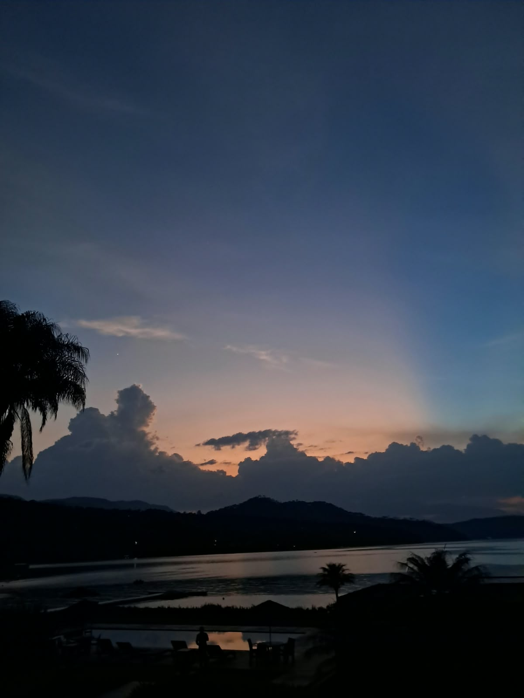

BELLEZA NATURAL
Descubriendo la historia, cultura y belleza que hace unico a nuestro municipio

Centro Valle De Bravo
En esta fotografía se observa una calle del centro de Valle de Bravo, caracterizada por su suelo empedrado y sus construcciones de estilo tradicional. Los edificios tienen paredes blancas, detalles de madera, balcones y techos de teja rojiza, elementos que conservan la apariencia característica de la arquitectura del municipio. También se distinguen restaurantes y establecimientos con mesas al aire libre, protegidas por sombrillas, donde las personas pueden descansar y disfrutar de alimentos. La presencia de peatones, motocicletas y vehículos muestra el movimiento cotidiano de esta zona.
El centro de Valle de Bravo es un espacio importante para la convivencia social, el comercio y el turismo. Sus calles tradicionales, restaurantes y negocios permiten que los visitantes conozcan la gastronomía, las costumbres y la arquitectura local. Además, los establecimientos generan oportunidades de trabajo para los habitantes y contribuyen a la economía del municipio. Por esta razón, es importante conservar los edificios históricos, mantener las calles limpias y respetar las tradiciones de la comunidad, para que Valle de Bravo continúe siendo un lugar atractivo y lleno de historia.

El lago bajo el cielo dorado
En esta fotografía se aprecia un camino empedrado que conduce hacia el lago de Valle de Bravo. A los lados se encuentran construcciones con techos de teja, paredes de estilo tradicional y abundante vegetación.
Las casas, los caminos y las plantas crean un ambiente acogedor que invita a recorrer el lugar y disfrutar de sus atractivos. Además, el lago representa una fuente importante de turismo y recreación para la región. Conservar estos espacios limpios, proteger los árboles y evitar tirar basura permite mantener la belleza del municipio y ofrecer una experiencia agradable tanto a los habitantes como a los visitantes.

Un paisaje lleno de paz
Esta fotografía se observa un hermoso atardecer en el municipio de Valle de Bravo, Estado de México. El cielo presenta una combinación de colores azules, anaranjados y rosados que crean un paisaje tranquilo y agradable. En el fondo se distinguen las montañas que rodean el lago, mientras que las nubes oscuras resaltan la belleza natural del lugar. También se pueden observar palmeras y algunas luces a la orilla del agua, que le dan un toque especial al paisaje.
Este lugar representa uno de los principales atractivos naturales de Valle de Bravo, conocido por su lago y sus paisajes montañosos. Es un sitio ideal para descansar, contemplar la naturaleza y disfrutar de momentos de tranquilidad con familiares o amigos. Además, sus atardeceres atraen a visitantes que buscan tomar fotografías y admirar la belleza del entorno. Este paisaje demuestra la importancia de cuidar el medio ambiente y conservar los espacios naturales que forman parte de la identidad del municipio.